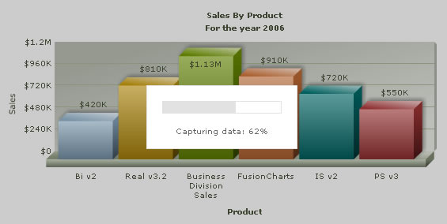
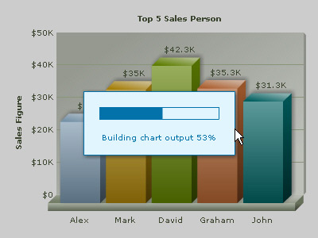

| Configuring export dialog cosmetics | |||||||||||||||||||||
When the chart is in capture phase, it shows the export dialog as shown below: |
|||||||||||||||||||||
|  | |||||||||||||||||||||
The cosmetics of this dialog can be customized using the following attributes: |
|||||||||||||||||||||
|
|||||||||||||||||||||
| An example | |||||||||||||||||||||
Shown below is a customized dialog box: It has the following parameters in XML: <chart ... exportDialogColor='e1f5ff' exportDialogBorderColor='0372ab' exportDialogFontColor='0372ab' exportDialogPBColor='0372ab' ...> |